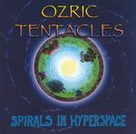

| Artist: | Ozric Tentacles |
| Title: | Spirals In Hyperspace |
| Label: | Magna Carta MAX-9067-2 |
| Length(s): | 69 minutes |
| Year(s) of release: | 2004 |
| Month of review: | [06/2004] |
| 1) | Chewier | 5.26 |
| 2) | Spirals In Hyperspace | 9.51 |
| 3) | Slinky | 8.39 |
| 4) | Toka Tola | 7.46 |
| 5) | Plasmoid | 5.17 |
| 6) | Oakum | 9.03 |
| 7) | Akasha | 7.27 |
| 8) | Psychic Chasm | 8.44 |
| 9) | Zoemetra | 7.23 |
Time for the title track, also the longest tune on the album. Spirals In Hyperspace opens with low bass work, fluent though. Again a typical space rock track, this time more flowing. The guitar work which sets in after a few minutes is of the meandering kind, in fact, it shows that in some ways at least, the Ozrics aren't as far from jazzrock and krautrock band as you might think. The strong keyboards presence and the occasional world music influence are the many diversions. With its almost ten minutes there quite a few differently styled passages here, some more moody and some more urgent ones, in which we often find the guitar prominently figuring. In the final minutes the rock really bursts loose.
After the woolly Slinky, Toka Tola is one of the more recognizable tunes with the keyboards the dominant factor, especially the fast run which often crops back up again. For the rest, the music is rather dreamy and melodic, and we even hear some acoustic guitar rearing its head in the back. In the second part of the song, the guitar takes the leading role again, resulting in the power getting cranked up significantly.
In Plasmoid, the going start slow, but the pace builds up gradually throughout. Plenty of percussion here, but the music stays light. The effects on the keyboards are quite weird. Oakum seems to be the only track on which we find the whole of the Ozrics. The opening is cosmic, after which fast, low pitched percussion sets in, a bit in the vein of Tangerine Dream sequencers in fact. Over that the guitar plays some of his riffs, but the concentration is in the first half is mainly on the keyboards, both solo's as well as the underlying patterns. The guitar does set in forcefully halfway, and does so again later after letting the smooth parts take over for variations sake.
Akasha is yet another one of those cosmic zweepy tunes full of detail. The music is quite danceable here, especially towards the end. I wonder to what extent this band has broken through there. Maybe the presence of Gong's/System 7's Steve Hillage can help there.
Penultimately, Psychic Chasm opens quietly enough again. Again I get a bit of a Tangerine Dream feel here, the TD of the eigthies that is. Later the drum 'n' bassness sets in by virtue of the drum machine, while the keyboards cosmically ascend and the guitar gives the music a 'desert' feel. Zoemetra is the closer then, one in which the percussion rides strongly. This is the most 'world' influenced tune on the album, with the silver flute and various non-western percussion instruments.